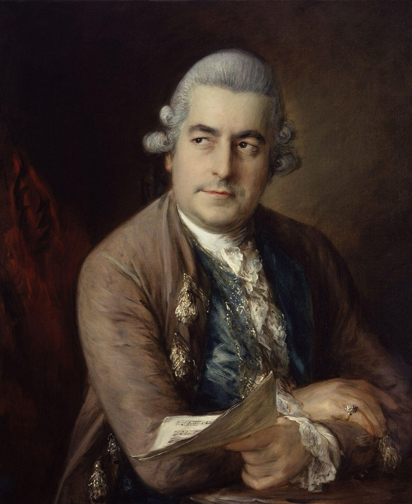

'The great Bach': when the name meant the sons

When the English music historian Charles Burney toured Germany in 1772, gathering material for his great survey of European music, he naturally made a pilgrimage to the most celebrated Bach alive. He did not go to Leipzig; there was nothing in Leipzig but a grave and a school choir. He went to Hamburg — to Carl Philipp Emanuel, who by then occupied Telemann's old post there, the godfather's chair passing to the godson with a symmetry the family must have savored. Emanuel was the author of the era's definitive keyboard treatise, the master of the sensitive style, the bridge every history of music draws between the Baroque and Haydn — and, by the settled public consensus of the age, the great Bach. Meanwhile, in London, a different Bach owned the town outright: Johann Christian, the "London Bach," with his operas, his royal music-mastership, and the concert series that defined English musical life. When an eight-year-old prodigy named Mozart visited London in 1764, it was J.C. Bach who sat the boy on his knee and shaped his sense of what a singing allegro could be. To say "Bach" in this world, without qualification, was to name one of these men. You might mean Emanuel; you might mean the fashionable Christian; only after a pause would anyone think of old Sebastian at all.
The father, in this dispensation, was a father figure in the most literal sense: the stern old contrapuntist from whom the moderns descended, respected the way one respects a grandfather's portrait in the hall — honored, dusted, and walked past. And the strangest thing about the arrangement is how natural it felt. The era's taste had ruled for clarity, feeling, one melody at a time, and the sons were among that ruling style's chief architects — Emanuel shaping the emerging classical language that Haydn and Mozart would build on, Christian charming a capital. Nobody had to reject Sebastian; the century simply promoted his children over his head, and called it progress.
The sons' own attitudes were loyal and complicated at once, and the complication is where this card earns its place. Emanuel curated the legacy faithfully: he co-wrote the Obituary, preserved his share of the manuscripts, and answered Forkel's patient biographical inquiries for years — even as his own aesthetic creed, "play from the soul, not like a trained bird," half-agreed with the Scheibe verdict on strict counterpoint. The son who saved the St. Matthew Passion for posterity was also, stylistically, a gentle vote against it. Friedemann, the most gifted of the four and the most like his father at the organ, traded ever more heavily on the name as his fortunes sank — the inheritance as currency rather than trust. None of the composing sons wrote in the father's idiom; all of them carried his training visibly, like a bearing that survives a change of clothes. And then the line simply stopped. Christian died in 1782, Friedemann in 1784, Emanuel in 1788 — and the clan's six-generation music machine, having produced one last, brilliant, divergent generation, produced no more.
Here, seen precisely, is the engine of the eclipse. Sebastian Bach was never rejected by history; he was superseded within his own family, and the fashion-cycle of the age dressed that supersession as natural succession — the old master giving way to his heirs, as old masters should. Which means the revival, when it came, faced a task subtler than rehabilitation: it had to reverse not hostility but filial success. And it would do so, in one of reception history's finer ironies, with instruments the overshadowing generation itself had built — Emanuel's carefully preserved manuscripts, the sons' firsthand testimony flowing into Forkel's biography. The children eclipsed the father and, in the same gesture, kept the estate that would one day outshine them all. They were the eclipse, and they were also its cure, waiting in a Hamburg cupboard for the century to change its mind.
Continue with the era essay: The Eclipse: 1750–1829, or meet the biographer the sons briefed: Forkel's 1802 biography.
Wolff, The Learned Musician, epilogue
Burney's travel journals (1770s)
→ full bibliography & links